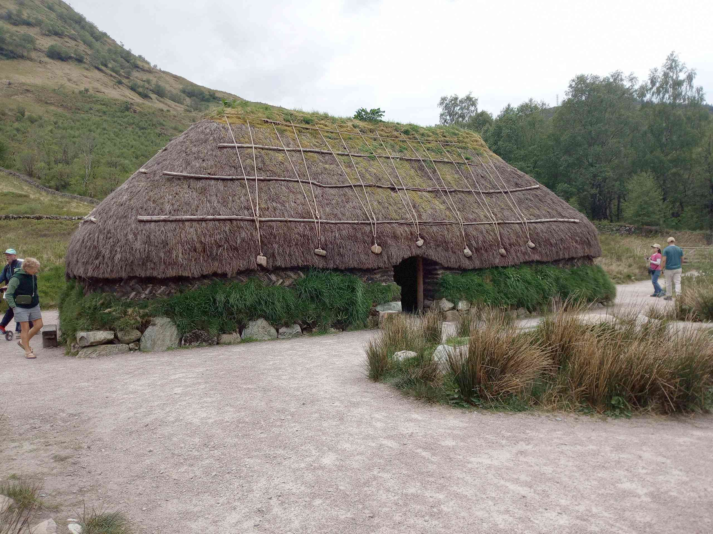

Scotland popop
2025-05-10 Day 1
Our overnight at the Travelodge was ok apart from the heavy footsteps from the room above us. Early breakfast then off. We had to go south to the next junction so that we could get onto the other side of the motorway to head north. The traffic was not too bad, it's just a long way. We stopped at a Tesco just off the motorway for petrol and danish pastries, just south of Glasgow. The main route around Glasgow was well planned and the traffic flowed well. The route followed the way that I'd been a few weeks ago on the train, but not as scenic because of trees. Lots of traffic along the snaking Loch Lomond road, but the views were good in parts. Arrived in Glen Coe valley but the parking place that we wanted was full, so we had to go a bit further and pulled in. Out on the side for lunch.Then we walked on the path beside the road, picking up a track back to the parking spot. Eventually we took the path up to the hidden valley. The steep steps down to the bridge was scenic. Then uphill. A few tricky rocky bits but we got to the viewpoint overlooking the hanging valley where the Scottish clan had camped when they were all killed. A nice long rest then back downhill.
Next was the Glen Coe youth hostel, not too far away. A dark room but quiet. After the evening meal we walked to the Clachaig Inn. There was a band playing but that bar was too busy, so we went round to the other bar and sat outside, which was ok at first but then the midges came. On the way back Adele saw some deer hiding in the woods, even a small one. Bed at last.
2025-05-11 Day 2
Early start because we needed to get to the parking spot for our walk of the day. Lots of space. Then our walk! Very steep. It started off cool but we soon warmed up. We rested at the saddle then climbed our first peak at just over 900m - steep and rocky.Then back down to the saddle and go in the other direction to another peak of over 900m. This was tricky because it involved a narrow ridge, small stones. I just concentrated on the path while Adele was very excited about the views. The 360 deg views were amazing - mountains all around, all massive.
Then a couple of hours of descent - hard on the knees. A relief to get down. A quick drink of coke then on to the new visitors centre at Glen Coe. It was a NT place and very fancy. We bought coffee and sat in the movie room to watch a film about the valley then about the turf house that they'd built, which we then went to look at.

We travelled another 40 mins to the Glen Nevis hostel. A bigger place, very nice en suite room, amazing view of Ben Nevis, they even had 2 air fryers. The weather was changing so we might have some rain tomorrow, maybe a low level walk. Evening meal very tasty.
2025-05-12 Day 3
A very good night's sleep. Just interrupted by the nearby Chaffinch. We expected some rain today, but that all changed, blue skies and lots of hot sun. We followed a path along the nearby river going east up to a waterfall and bridge.We saw a few deer, even one crossing the river. The water was so clear and inviting. We found a lovely spot near the waterfall for lunch. Then onto the forest track back down the valley to the visitors centre, following part of the west highland way. Interesting information to read then back along the riverside to the bridge near the hostel to dunk our feet in the river - very nice.
Back to the car and then into Fort William Morrisons. Ice-cream at the nearby green. Then back to the hostel for Irnbru drinks.
2025-05-13 Day 4
Another good night, a bit more humid but otherwise building up for a sunny day. We left for 8am - we really wanted to get most of the way in cooler temperatures.The bridge in front of the hostel takes us to a path which goes straight up and joins the main track - so many people, all very friendly saying hello and offering encouragement. The path rises at the same gradient all the way up, which was not too steep, so not too much of a strain. It was just a continuous up.
The views were amazing as we gained height - so many mountains all around. But it was soo tedious. We stopped half way up overlooking a small loch - we needed the break. After the steps there's a long stony section which ends at the top. Patches of snow.
Still good views, photos. A long break for lunch. Watched the crazy climbers. Then the descent - soo long. Because of the gradient the knees felt much less strained.
Then finally after our 1345m climb we got back to the hostel - at 20m. Lots of drinks, feet dunk in the river, then evening meal.
2025-05-14 Day 5
Even more humidity - fog on the mountain tops. Breakfast, strip beds then off to Steall waterfall which involved driving up the valley and a very narrow track to a carpark at the end. Fortunately we were earlier than othertand we got a place. The track goes into a narrow gorge which involved a bit of scrambling. Huge pieces of rock had fallen from the sides. It then opened out into a flat valley.The waterfall dominated, it was very tall and at an angle. The steel rope bridge had to be crossed by Adele and Louise - not that easy.
I walked across the river. We couldn't get too close to the waterfall but it was still impressive. We then walked further up the valley and found a lovely spot for lunch. With a different side of Ben Nevis to look at. Then we made our way back. By this time there were more people about. We drove into Fort William and parked near the Neptune's Staircase - a series of locks - which I wasn't really looking at when I did the Great Glen Way because it was pouring down. Everything looks so different in the sunshine. There were 2 sail boats going down.
At the last lock something went wrong because one of the locks was overflowing. We walked along the canal to the beach - actual sand and a lovely beach.
There was a wreck of a boat there, with a ladder - Adele and Louise went up. Then back along the canal to the car. Next stop Aldi, then an hours drive to Crianlarich hostel past all the big mountains and lochs. The hostel was full of people doing the WHW, so only there for 1 night. Large dining room but small kitchen. Room large but not en suite like the last one.
2025-05-15 Day 6
Another sunny day! The place was quite busy. We were not in a hurry, so left at 10:45.The train station was a few minutes away. The train from Glasgow splits here, one section goes to Oban and the other to Fort William. We took the train that goes higher up the hillside because of the better views. We got out at the next stop, before the ticket collector came - saving £3.60. We walked down from Upper Tyndrum station to pick up the WHW. It was pleasant walking through the trees and learning about how we were not allowed to pan for gold nearby. We kept saying hello to lots of walkers going in the other direction. It was very hot in the sun and very little breeze. I had got bit yesterday evening by the dreaded midges - who were multiplying all the time. We had lunch beside a river in the shade. I was very sad to find that the Wigwam campsite had shut - one of favourites. The lambs were cute. Then came the hilly section. Again I was saddened because the trees had been cut so it looked bare. We saw two army veterans - one carrying a washing machine. Even the woods into Crianlarich had been trimmed. At the hostel we drove to the Falls of Falloch - carpark very full and lots of people at the riverside and in the water.
Back to the hostel, ice cream from the shop. We went into the local pub to check if they were open tomorrow and looked at the menu - it was a possibility for our last day. Had a cup of coffee at the hostel - filtered and they even had sachets of oat milk. The evening meal was very tasty, in fact all of our meals were good. This time I didn't go outside in the evening - trying to avoid feeding the midges.
2025-05-16 Day 7
Early start, off by 8am. The car parking area was very near. We started walking along a track but we soon picked up the path up - lots of up. Most of the way was ok and a bit of scrambling but not bad. We met a few people but for most of the day it was deserted. The scrambling became more precarious as we went along.There was one bit were we took our rucksacks off because it was vertical - pretty scary. But I managed it, just. There was a stretch at 920m but it still went up and down. The views were amazing all around - mountains. The descent was much easier, but boggy. Fortunately this hot weather made the bog less wet.

Back to the car and the hostel. After shower we went out to the local pub for a meal. I had haggis neeps and tatties. All very tasty. Then back to the hostel. We were pretty tired after today's long strenuous walk. Our last day. Tomorrow is home!
View GPX Files for 2025-05-09_Scotland